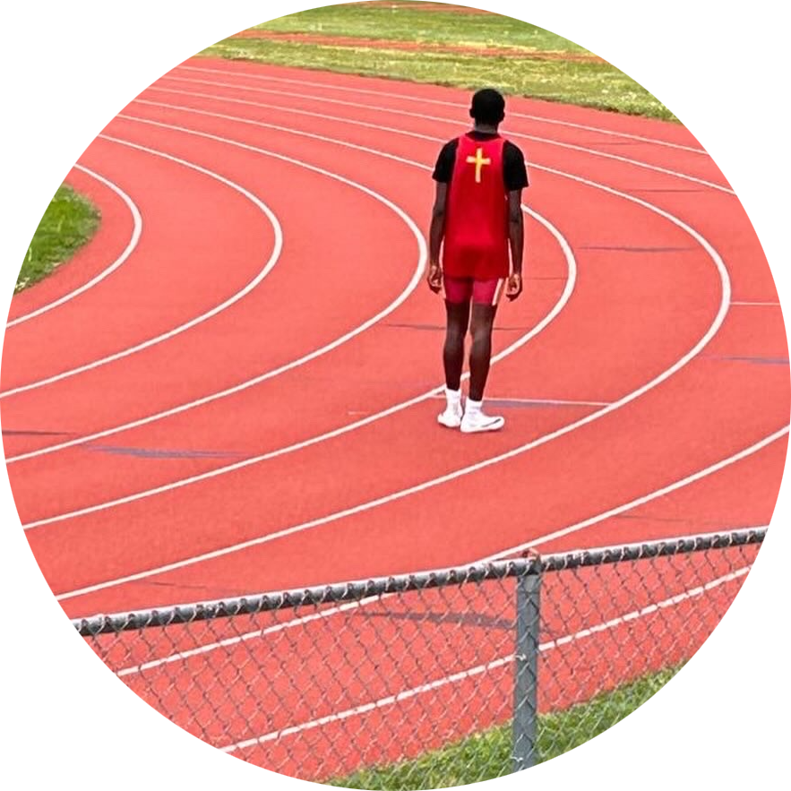

Sharjeel

My extracurriculars involve volunteering at tutor centers, working as a paid tutor, and playing on the baseball team. For more information about my education and the classes I'm taking, you can visit my website.
Click HerePatrick

Being that it's early in my career, I haven't been in too many extracurriculars. With that being said, I have participated in some. To learn more in-depth about some of the extracurriculars, my education, and personal life
Click HereSean
I am 15 years old and a rising sophomore. I attend Bergen Catholic Highschool in NJ. Some of my extra curriculers include Coding Classes(python, Java, CSS), All Star Code, Community Service, and Working Out with coaches. Here is my website-->Click Here
Rafsan

To give some background on my education, I attend The Manhattan Center for Science and Mathematics, and I am currently a rising sophomore. I got accepted into the highly-selective program AllStarCode and I created a M.A.S.H game, and a personal website. If you would like to learn more, you can visit my website Click Here